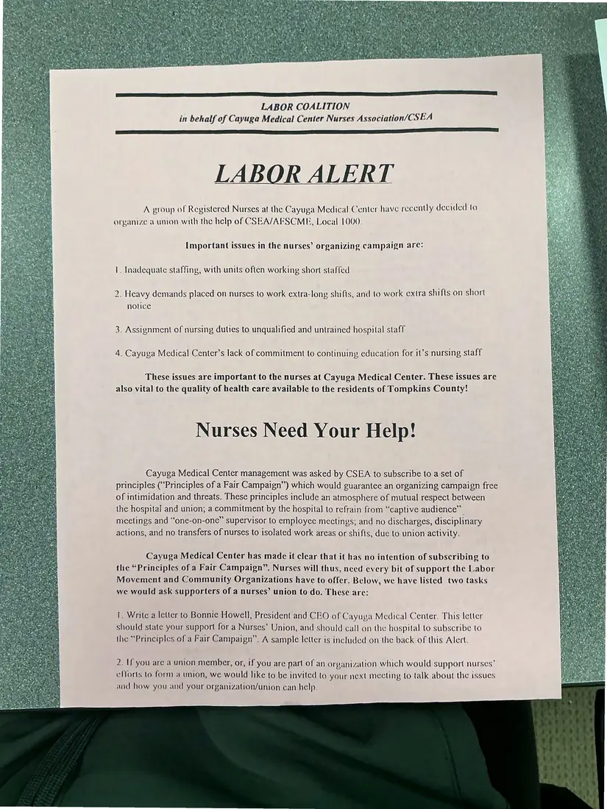
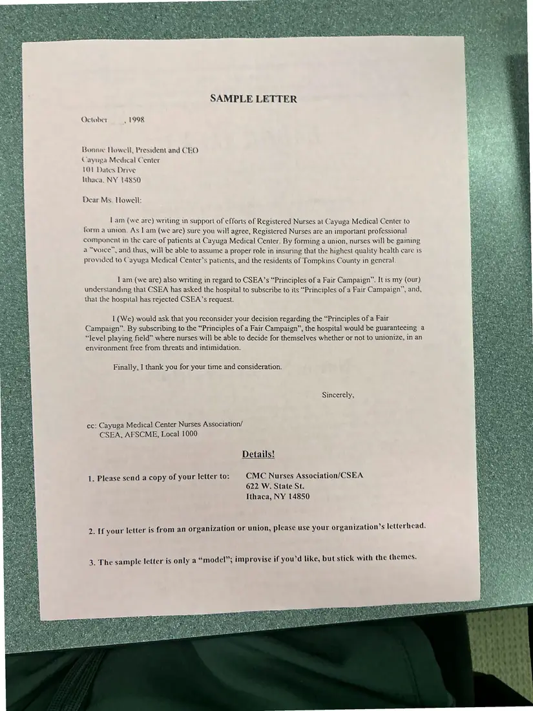

Flyer, 2 pages
LABOR ALERT: “Nurses Need Your Help!” (Cayuga Medical Center)
[October 1998]Date inferred
A call for support for registered nurses at Cayuga Medical Center organizing with CSEA. It describes understaffing, mandatory long shifts, and “job redesign,” and includes a sample letter to the hospital's chief executive.
Download or cite this itemPages


(open zoom view)Read the page text (machine-read, mostly readable)
This text was generated automatically from the photograph and has not been corrected. The image is the authoritative record.
LABOR COALITION in behalf of Cayuga Medical Center Nurses Association/CSEA LABOR ALERT A group of Registered Nurses at the Cayuga Medical Center have recently decided to organize a union with the help of CSEA/AFSCME, Local 1000. Important issues in the nurses’ organizing campaign are: |. Inadequate staffing, with units often working short staffed 2. Heavy demands placed on nurses to work extra-long shifts, and to work extra shifts on short notice 3. Assignment of nursing duties to unqualified and untrained hospital staff 4. Cayuga Medical Center’s lack of commitment to continuing education for it’s nursing staff These issues are important to the nurses at Cayuga Medical Center. These issues are also vital to the quality of health care available to the residents of Tompkins County! Nurses Need Your Help! Cayuga Medical Center management was asked by CSEA to subscribe to a set of principles (“Principles of a Fair Campaign”) which would guarantee an organizing campaign free of intimidation and threats. These principles include an atmosphere of mutual respect between the hospital and union; a commitment by the hospital to refrain from “captive audience” meetings and “one-on-one” supervisor to employee mectings; and no discharges, disciplinary actions, and no transfers of nurses to isolated work areas or shifts, duc to union activity. Cayuga Medical Center has made it clear that it has no intention of subscribing to the “Principles of a Fair Campaign”. Nurses will thus, need every bit of support the Labor Movement and Community Organizations have to offer. Below, we have listed two tasks we would ask supporters of a nurses’ union to do. These are: 1. Write a letter to Bonnie Howell, President and CEO of Cayuya Medical Center. This letter should state your support for a Nurses’ Union, and should call on the hospital to subscribe to the “Principles of a Fair Campaign”. A sample letter is included on the back of this Alert. 2. If you are a union member, or, if you are part of an organization Which would support nurses’ efforts to form a union, we would like to be invited to your next mecting to talk about the issues and how you and your organization/union can help.


(open zoom view)Read the page text (machine-read, mostly readable)
This text was generated automatically from the photograph and has not been corrected. The image is the authoritative record.
SAMPLE LETTER October , 1998 Bonnie Howell, President and CEO Cayuga Medreal Center 101 Dates Drive Ithaca, NY 14850 Dear Ms. Howell: 1am (we are) writing in support of efforts of Registered Nurses at Cayuga Medical Center to form a unton. As I am (we are) sure you will agree, Registered Nurses are an important professional component in the care of patients at Cayuga Medical Center. By forming a union, nurses will be gaining a “voice”, and thus, will be able to assume a proper role in insuring that the highest quality health care 1s provided to Cayuga Medical Center's patients, and the residents of Tompkins County in general. 1 am (we are) also writing in regard to CSEA’s “Principles of a Fair Campaign”. It is my (our) understanding that CSEA has asked the hospital to subscribe to its “Principles of a Fair Campaign”, and, that the hospital has rejected CSEA’s request. 1 (We) would ask that you reconsider your decision regarding the “Principles of a Fair Campaign”. By subscribing to the “Principles of a Fair Campaign”, the hospital would be guaranteeing a “Jevel playing field” where nurses will be able to decide for themselves whether or not to unionize, in an environment free from threats and intimidation. Finally, ] thank you for your time and consideration. Sincerely, cc: Cayuga Medical Center Nurses Association/ CSEA, AFSCME, Local 1000 Details! 1. Please send a copy of your letter to: CMC Nurses Association/CSEA 622 W. State St. Ithaca, NY 14850 2. If your letter is from an organization or union, please use your organization’s letterhead. 3. The sample letter is only a “model”; improvise if you'd like, but stick with the themes.
See something wrong, or recognize a person or event? Send a correction. If you hold rights in this item or think it should not be public, write to the same address.